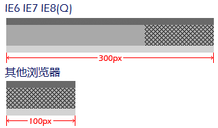
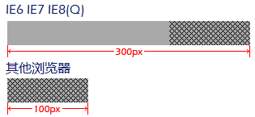

根据 CSS2.1 规范中的描述，浮动元素将尽可能的向左或向右浮动，直到该元素的外边界碰到其包含块的边界或另一个浮动元素的外边界。
换句话说，当浮动元素的包含块能够在横向完全容纳该元素时，该元素不会再继续撑大其包含块。
关于浮动元素的详细资料，请参考 CSS2.1 规范 9.5 Floats 中的内容。
关于包含块的详细资料，请参考 CSS2.1 规范 10.1 Definition of "containing block" 中的内容。
在 IE6 IE7 IE8(Q) 中，一个右浮动元素将尽可能的向右布局，并撑大其所有宽度为 'auto' 的祖先级元素的宽度，直到遇到一个明确设定了宽度的祖先级元素为止。
注：这种现象仅在该元素有宽度为 shrink-to-fit 的的祖先级元素时才可以看到。
这个问题将导致一些元素在各浏览器中的实际尺寸或布局不一致。
| IE6 IE7 IE8(Q) |
|---|
分析以下代码：
<div id="Container" style="width:300px; position:relative;"> <div
id="STF_1" style="height:50px; background:lightgrey; position:absolute;"> <div
id="STF_2" style="float:left; height:40px; background:darkgray;"> <div
id="Wrapper" style="border-top:10px solid dimgray;"> <div
id="Right" style="float:right; width:100px; height:30px;
background:url(x.gif);"></div> </div> </div> </div>
</div>
根据 shrink-to-fit 的计算公式，可以计算出 STF_1 和 STF_2 的宽度均应该为 100px。
Wrapper 的宽度为 auto，它的宽度应该等于 STF_2 的宽度，也是 100px。
这段代码在不同的浏览器环境中表现如下：

删除 STF_1 和 Wrapper 后：

可见，在 IE6 IE7 IE8(Q) 中，第一张图中的 STF_1、STF_2 和
Wrapper，以及第二张图中的 STF_2 的最终宽度都是 300px，与预期的结果不符。Right
被尽可能的在最右侧被渲染，直到其所有宽度为 'auto' 的祖先级元素的宽度到达极限为止。
在其他浏览器中，第一张图中的 STF_1、STF_2 和 Wrapper，以及第二张图中的
STF_2 的最终宽度均为 100px，是正确的值。
这个差异是由 IE6 IE7 IE8(Q) 中布局右浮动元素时的 Bug 造成的。
注：如果受影响的元素的 'direction' 是 'rtl' ，情况又有不同，并且在 IE6 IE7(Q) IE8(Q) 中与 IE7(S) 中的表现也不相同。将 'direction' 设置为 'rtl' 的情况并不常见，因此本文不做分析。
该 Bug 将导致受影响的元素的宽度尽可能的大。
该 Bug 在 IE8(S) 中被修复。
如果一个页面在 IE6(S) IE7(S) 或 IE6(Q) IE7(Q) IE8(Q) 中被设计，并且触发了该 Bug，那么这个页面在其他浏览器中的布局将与预期的不符。部分内容将更加紧凑。
关于 shrink-to-fit 算法的详细资料，请参考 CSS2.1 规范 10.3.5 Floating, non-replaced elements、10.3.7 Absolutely positioned, non-replaced elements 和 10.3.9 'Inline-block', non-replaced elements in normal flow 中的内容。
如果有一个右浮动元素，应注意避免其祖先级元素的宽度为 shrink-to-fit，即给它们设定一个明确的宽度。以使页面布局在各浏览器中的表现一致。
| 操作系统版本: | Windows 7 Ultimate build 7600 |
|---|---|
| 浏览器版本: |
IE6
IE7 IE8 Firefox 3.6 Chrome 4.0.302.3 dev Safari 4.0.4 |
| 测试页面: | float_right.html |
| 本文更新时间: | 2010-06-21 |
float right shrink-to-fit 右浮动 父元素 祖先级元素 宽度 撑大